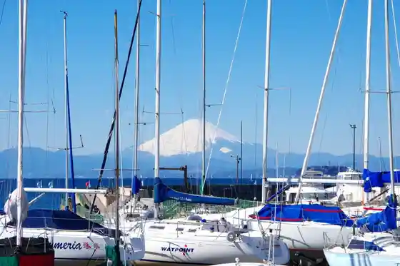
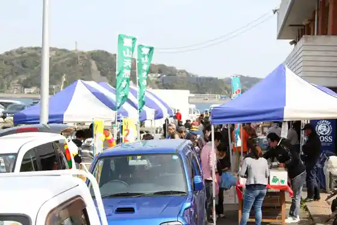
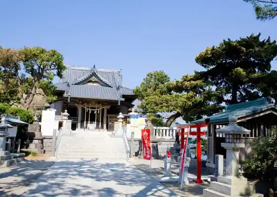

Hayama Mariina
Hayama, Kanagawa · 046-875-0002 · Official / source link

Chojagasaki Coast
Hayama, Kanagawa · Official / source link
Resutoran Ra Mare
Hayama, Kanagawa · 046-875-6683 · Official / source link
Hayama Magatto Nichiyoasa City
Hayama, Kanagawa · 090-4745-2238 · Official / source link

Morito Daimyojin
Hayama, Kanagawa · 046-875-2681 · Official / source link

Lydlys Atelier&Showroom
Hayama, Kanagawa · 080-6625-0127 · Official / source link
Hayama Shiosai Park
Hayama, Kanagawa · 046-876-1140 · Official / source link
SCAPES THE SUITE Afutanunteii
Hayama, Kanagawa · 046-877-5730 · Official / source link
Kanagawa Prefectural Kindai Art Museum Hayama Kan
Hayama, Kanagawa · Official / source link
BEACH HAYAMA OUTDOOR FITNESS CLUB
Hayama, Kanagawa · 046-854-4046 · Official / source link
Hayama Park
Hayama, Kanagawa · 046-876-4601 · Official / source link
Yamaguchi Hoshun Memorial Museum
Hayama, Kanagawa · 046-875-6094 · Official / source link
SHONAN BEACH YOGA
Hayama, Kanagawa · Official / source link
Hayama Oshansupotsu
Hayama, Kanagawa · 046-874-4796 · Official / source link
Hayama Minato
Hayama, Kanagawa · 046-875-1504 · Official / source link
Resutoran Yunagi Tei
Hayama, Kanagawa · 046-876-2106 · Official / source link
Moriyama Sha
Hayama, Kanagawa · Official / source link
Hayama Sangaokayama Ryokuchi
Hayama, Kanagawa · 046-876-4601 · Official / source link